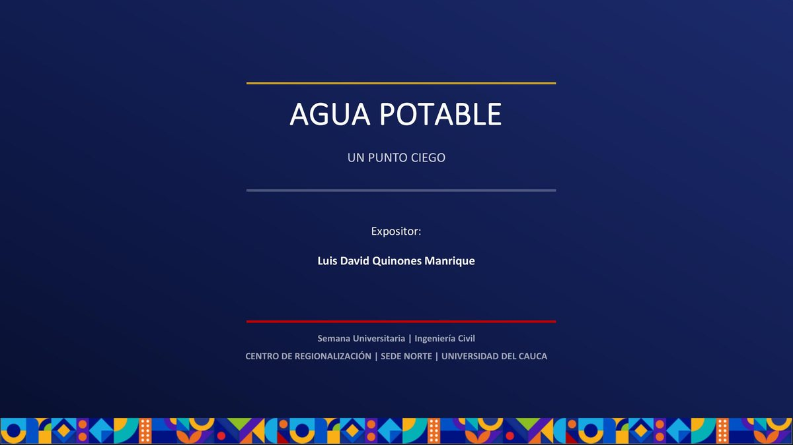

Cryptosporidium
Requiere un CT mayor a 7.200 mg·min/L para una inactivación de 3-log. En Milwaukee 1993, un sistema que cumplía los estándares de cloración produjo 403.000 casos y 69 muertes.
Línea de investigación
Una revisión sistemática sobre los riesgos de la cloración como única barrera y las alternativas de barreras múltiples para PTAP y SAAR en Colombia.

El problema
El cloro es la barrera más extendida y sigue siendo útil contra bacterias sensibles. Pero no es un desinfectante universal. Cryptosporidium, Giardia y la forma cocoidal de Helicobacter pylori sobreviven a dosis operativas, y los indicadores convencionales no siempre los detectan.
La consecuencia es incómoda: un agua puede cumplir con la Resolución 2115 de 2007, no presentar coliformes y, aun así, contener formas viables de patógenos asociados a enfermedad aguda y a cáncer gástrico. Esta línea revisa esa evidencia para el contexto colombiano y la conecta con decisiones de tratamiento.
PTAP: planta de tratamiento de agua potable. SAAR: sistema de abastecimiento de agua rural.
Hallazgos
El problema no es que el cloro falle siempre, sino que su cobertura tiene límites predecibles. Estos son los que más pesan en la evidencia revisada.
Requiere un CT mayor a 7.200 mg·min/L para una inactivación de 3-log. En Milwaukee 1993, un sistema que cumplía los estándares de cloración produjo 403.000 casos y 69 muertes.
CT de 41 a 137 mg·min/L. Es endémica en fuentes superficiales rurales; sus quistes resisten la cloración y los biofilms de las redes protegen a los microorganismos del desinfectante residual.
Sobrevive a 0.5–1.0 mg/L de cloro, no se cultiva en laboratorio y no se detecta con métodos estándar. La prevalencia en adultos colombianos ronda el 70 % y la bacteria es carcinógeno Grupo 1 de la IARC.
El dilema
El cloro se mueve entre dos riesgos. La respuesta no es elegir un extremo, sino cambiar el esquema de tratamiento.
Los patógenos resistentes sobreviven, el agua se reporta como apta y el riesgo queda invisible. Los brotes en sistemas clorados que cumplían los estándares son la evidencia más incómoda.
El cloro reacciona con la materia orgánica y forma trihalometanos y ácidos haloacéticos, asociados a cáncer de vejiga y efectos reproductivos adversos. También empeora el sabor y el olor.
“La solución no es más cloro, es mejor tratamiento.”
Alternativas
La seguridad no depende de una tecnología, sino de la superposición de defensas. Cada barrera cubre lo que las otras dejan pasar.
Filtración, membranas o arena. Retiene partículas, sedimentos, microplásticos y quistes de protozoarios como Cryptosporidium.
Carbón activado y adsorción. Retira metales pesados, pesticidas y subproductos de desinfección antes de que lleguen al usuario.
UV, cloro u ozono. Inactiva el ADN de virus, bacterias y formas resistentes. El ozono es una alternativa complementaria, no un reemplazo automático.
“Ninguna tecnología cubre todos los riesgos; la seguridad reside en la superposición de defensas.”
Método
Revisión sistemática con protocolo PRISMA 2020. La pregunta PICO compara población urbana y rural abastecida por PTAP o SAAR con cloración como único método, exposición a agua tratada solo con cloro (0.5–2.0 mg/L residual), frente a sistemas con barreras múltiples o sin desinfección.
El documento completo incluye las cadenas de búsqueda, la tabla de estudios y las referencias. La presentación resume la revisión y cita los estudios en los que se apoya. No sustituye la lectura de los artículos originales.
Materiales
La revisión completa con referencias, la presentación que la resume, el artículo de reflexión y la charla de divulgación.
Revisión sistemática
18 diapositivas con la pregunta PICO, el método PRISMA 2020, la evidencia colombiana y los 18 puntos críticos. Octubre de 2026.
HTML autocontenido · 18 diapositivas

Charla de divulgación
45 diapositivas y anexos sobre el contexto colombiano, los riesgos agudos y crónicos, y el enfoque de barreras múltiples con ozonización como alternativa complementaria.
PDF · 45 diapositivas y anexos · 12 MB
Documento completo
PRISMA 2020, cadenas de búsqueda, tabla de estudios incluidos y referencias. Ozonización solar, cocoides VBNC y puntos ciegos normativos en Colombia.
HTML · documento de trabajo con referencias
Artículo de reflexión
Quiñones, Fernández, Acosta, Leyton, Martínez y David Castillo. Una reflexión técnica y social sobre la ozonización con autonomía solar en puntos de interés sanitario rurales.
6 páginas · PDF y Word · versión de trabajo
Uso del material. Los documentos son versiones de trabajo y divulgación. La charla incluye imágenes de apoyo de terceros; el artículo incluye los correos de los autores. Si alguna imagen requiere crédito o debe retirarse, o si prefieres una versión sin correos, escríbeme desde la página de contacto.
Antes de difundir el artículo. Si está sometido a una revista, revisa su política de preprints. La versión pública puede contar como divulgación previa.
Si estás midiendo, diseñando o evaluando una alternativa de desinfección, podemos comparar notas.
Escribir